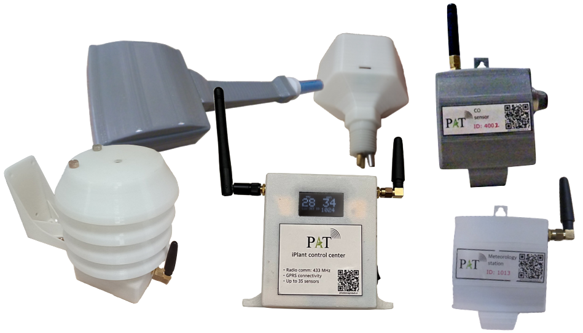

محصولات PAT

- مرکز کنترل
- - مدل دیتا لاگر
- - مدل هاب مرکزی
- سنسورهای هواشناسی
- - مدل فضای پوشیده با تغذیه باتری
- - مدل فضای پوشیده با تغذیه برق
- - مدل فضای آزاد با تغذیه باتری
- سنسور خاک
- - پارامترهای: دما و رطوبت خاک
- - عمر باتری طولانی (۲ عدد باتری قلمی آلکالاین برای ۶ ماه جمعآوری مداوم داده)
- سنسور سنجش گاز
- - پارامترهای: CO یا CO2
- سنسور آب
- - پارامترهای: EC و دمای آب
- - قابل نصب مستقیم بر لولههای آبرسانی
- واحد کنترل
- - در مدلهای ۱،۲،۴ و ۸ کاناله
- نرمافزار مدیریت
- - دسترسی به داده تمام سنسورهای نصب شده
- - تعیین بازههای زمانی کاشت، برداشت، کوددهی و ...
- - مدیریت منابع